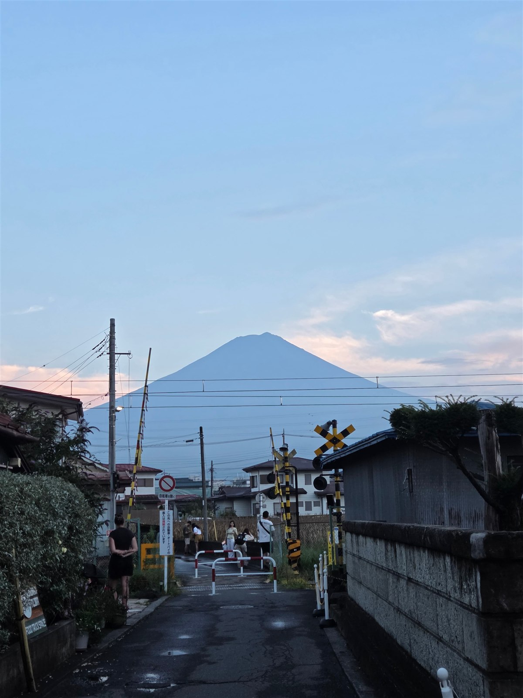
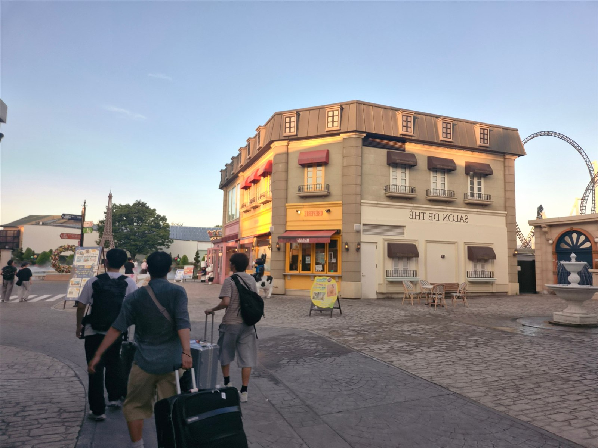
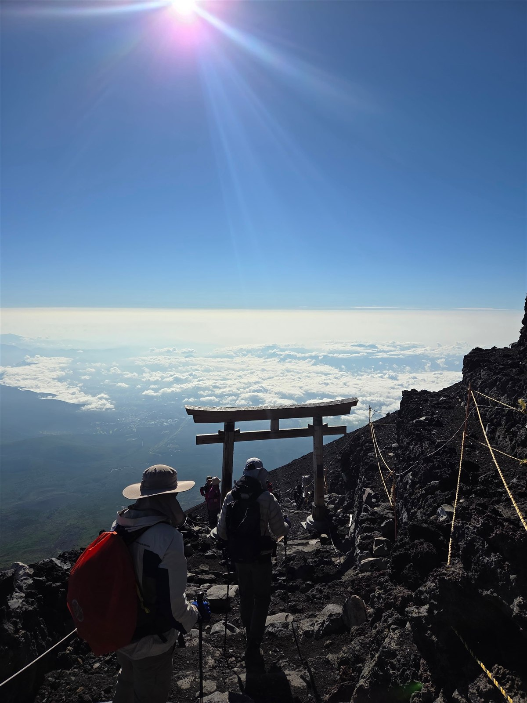
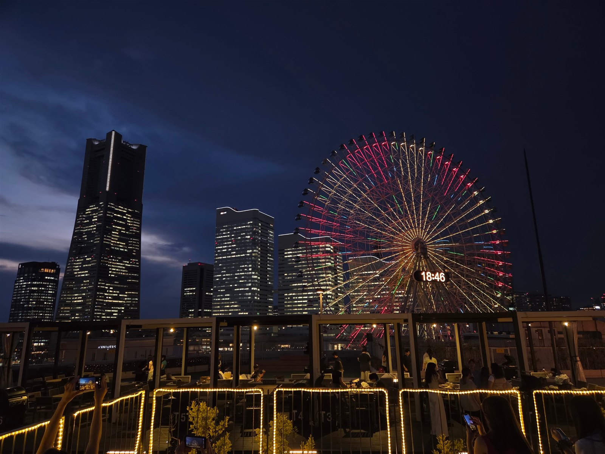
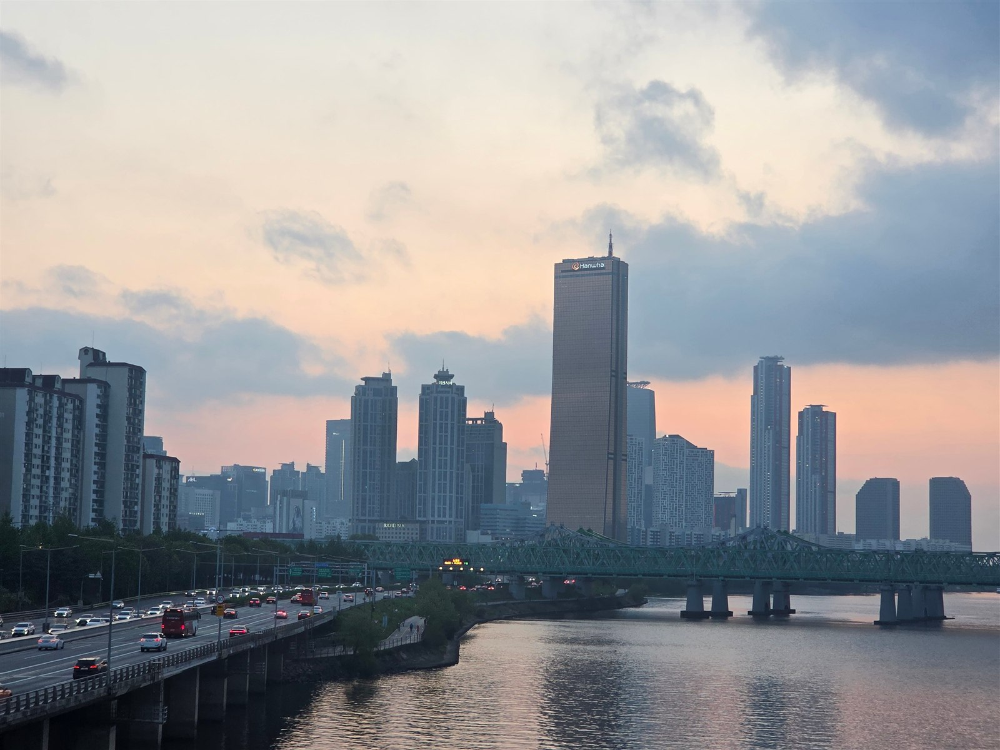

비가 그친 뒤, 성산의 가장자리
서둘러 다음 장소로 가지 않고, 젖은 길이 마르는 시간을 지켜본 하루였습니다.

기록 더 보기
바람이 세게 불수록 바다는 멀리 보였습니다. 여행에서 가장 오래 남는 장면은 늘 계획표 바깥에 있었습니다.
TRAVEL NOTES · 2026
걷다가 멈춘 곳, 오래 바라본 풍경, 돌아와서야 알게 된 마음을 기록합니다. 영상을 보고 난 뒤의 생각도 편하게 남겨 주세요.

01 · JOURNAL
서둘러 다음 장소로 가지 않고, 젖은 길이 마르는 시간을 지켜본 하루였습니다.

바람이 세게 불수록 바다는 멀리 보였습니다. 여행에서 가장 오래 남는 장면은 늘 계획표 바깥에 있었습니다.

낮의 소음이 가라앉고 배의 불빛이 하나씩 켜지던 시간.

목적지를 정하지 않은 채 해변을 따라 걸은 기록.
02 · INDEX
일본 여행 사진을 준비 중입니다.
03 · ABOUT
이곳은 여행 브이로그와 후기를 모아두는 개인 기록장입니다. 영상 속 장면을 다시 떠올리며, 각자의 여행 이야기도 나눌 수 있으면 좋겠습니다.

내가 다녀온 곳의 여행 브이로그와 후기를 기록합니다. 사진과 영상을 함께 보고, 여행에 대한 생각을 편하게 나눠 주세요.
이 템플릿은 일부러 아무 스타일도 갖고 있지 않다. 이미 꾸며져 있으면 고칠 것이 없어서 아무것도 배우지 못한다.
섹션의 개수도, 이름도, 순서도 정해져 있지 않다. 무엇을 먼저 보여줄지는 이 사이트를 보는 사람이 무엇을 궁금해하는지에 달려 있다.
04 · COMMENTS
여행 이야기를 남겨주세요